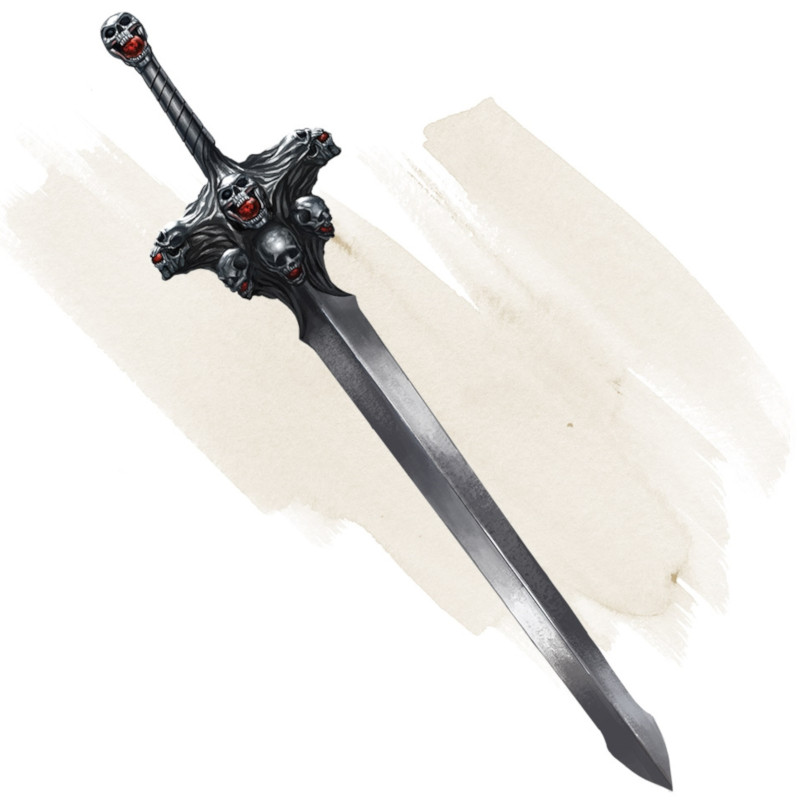

Voleuse des neuf vies
[ Nine Lives Stealer ] [ Voleuse de vie ]
Arme (toute épée), très rare (nécessite un lien)
Vous gagnez un bonus de +2 aux jets d'attaque et de dégâts effectués avec cette arme magique.
L'épée possède 1d8 + 1 charges. Quand vous obtenez un coup critique contre une créature à qui il reste moins de 100 points de vies, celle-ci doit réussir un jet de sauvegarde de Constitution DD 15 ou être tuée instantanément, sa force vitale étant arrachée de son corps (les morts-vivants et les artificiels sont immunisés). L'épée perd 1 charge si la créature est tuée. Elle perd cette propriété une fois toutes les charges épuisées.
L'épée possède 1d8 + 1 charges. Quand vous obtenez un coup critique contre une créature à qui il reste moins de 100 points de vies, celle-ci doit réussir un jet de sauvegarde de Constitution DD 15 ou être tuée instantanément, sa force vitale étant arrachée de son corps (les morts-vivants et les artificiels sont immunisés). L'épée perd 1 charge si la créature est tuée. Elle perd cette propriété une fois toutes les charges épuisées.
Dungeon Master´s Guide (SRD)
